214 — Budgets, Cost Explorer, etiquetado y FinOps automatizado
Parte: 17 — AWS: arquitectura, automatización y operación en producción
Nivel: avanzado · Horas estimadas: 4
Laboratorio: finops · Estado: EXECUTABLE_CORE
🎯 Propósito
Controlar el coste de lo que se ha montado en esta parte, donde ya han aparecido tres partidas que nadie había estimado. La clase fija el etiquetado como requisito de creación y no como limpieza posterior, explica cómo se lee una factura para encontrar el dinero de verdad, y automatiza lo que funciona: presupuestos con acción, detección de anomalías y retirada de lo que nadie usa. Con la advertencia de siempre: la policía del coste se rodea; el carril fácil, no.
📚 Resultados de aprendizaje
Al finalizar podrás:
- Imponer etiquetado en la creación, con barrera y no con auditoría.
- Leer la factura para encontrar las partidas que dominan.
- Configurar presupuestos y detección de anomalías que actúen.
- Atribuir el coste por servicio y por unidad de negocio.
- Retirar lo que no se usa, de forma automática y segura.
🧩 Conceptos centrales
| Concepto | Comprensión verificable |
|---|---|
etiqueta de asignación |
Etiqueta activada para que aparezca como dimensión en el informe de costes. Sin activar, no sirve. |
coste por unidad de negocio |
Coste dividido entre pedidos, usuarios o transacciones. Es la única cifra comparable en el tiempo. |
presupuesto con acción |
Presupuesto que además de avisar ejecuta algo: notificar, restringir o apagar. |
detección de anomalías |
Modelo que compara el gasto con el patrón previo y avisa de desviaciones. |
coste no atribuido |
Gasto que no cae en ningún servicio ni dueño. Es la parte que nadie reduce. |
recurso ocioso |
Recurso creado, facturado y sin uso. La categoría más fácil de eliminar y la que más se repite. |
🧠 Modelo mental
AWS se aprende como una progresión operativa: identidad federada, infraestructura declarativa, entrega, señales, recuperación y costo controlado.
Aplicado a esta clase, separa siempre cuatro planos: intención (qué necesita el usuario), configuración (qué declaramos), estado observado (qué existe de verdad) y evidencia (cómo sabemos que cumple). Confundirlos produce diseños que se ven correctos en un diagrama pero fallan al operar.
🗺️ Flujo de razonamiento

📖 Desarrollo
1. Etiquetar en la creación, no después
El proyecto de etiquetado que empieza etiquetando lo que ya existe fracasa siempre: mientras se etiqueta lo viejo, se crea lo nuevo sin etiquetas.
EL ORDEN CORRECTO
1 decidir el conjunto MÍNIMO de etiquetas obligatorias
2 impedir la creación sin ellas
3 y solo entonces, etiquetar lo existente
→ al revés, nunca se termina ley 25
Y el conjunto mínimo, que debe ser corto:
dueño el equipo, no una persona ley 20
servicio a qué sistema pertenece
entorno producción, preproducción, desarrollo
centro de coste a quién se le imputa
→ cuatro. Más de seis y nadie las pone bien
→ y con valores CERRADOS, no texto libre:
«prod», «Prod», «producción» y «PRD» son cuatro grupos
distintos en el informe
Cómo se impide la creación, por orden de fuerza:
1 BARRERA DE ORGANIZACIÓN
deniega crear sin las etiquetas
→ ni un administrador de la cuenta puede saltárselo
clase 169
2 POLÍTICA DE ETIQUETAS
fija los valores permitidos por clave
3 FUNCIÓN DE APTITUD EN LA CANALIZACIÓN
la plantilla que no las declara no despliega
clase 190
4 LA PLANTILLA DE SERVICIO NUEVO LAS TRAE HECHAS
→ esto es lo que hace que casi nunca falle nada
clase 171
Y la advertencia de la parte 14:
si poner las etiquetas cuesta trabajo, la gente creará los
recursos por otro camino, o pondrá valores basura para pasar
el control ley 16
→ el carril fácil las pone solo; la barrera es la red de
seguridad, no el mecanismo principal
Y lo que no se puede etiquetar, que hay que tratar aparte:
transferencia de datos entre zonas y regiones
coste compartido de servicios comunes
tráfico de salida sin recurso asociado
→ estos se reparten por regla, escrita y acordada
→ y hay que decir cuánto se reparte y con qué criterio
2. Leer la factura
La factura se mira mal: se abre el total, se dice «ha subido» y se cierra. Estas son las cinco vistas que encuentran el dinero.
1 POR SERVICIO, ordenado de mayor a menor
→ el 80 % del gasto suele estar en 3 o 4 líneas
→ y esas son las únicas que merece la pena optimizar
2 POR DUEÑO
→ y sobre todo: cuánto NO tiene dueño
→ el coste no atribuido no lo reduce nadie ley 20
3 POR ENTORNO
→ si preproducción cuesta más del 25 % de producción,
hay algo encendido que no debería
4 POR TIPO DE USO dentro del servicio grande
no basta «almacenamiento: 4.100 €»
hace falta: peticiones, almacenamiento por clase,
transferencia, recuperaciones
→ el desglose es donde está la sorpresa
5 COSTE POR UNIDAD DE NEGOCIO
coste / pedidos del mes
→ es la ÚNICA cifra comparable entre meses
→ sin ella, «el coste ha subido un 20 %» no dice si
mejoró o empeoró clase 142
Y las partidas que este programa ha visto sorprender, ya en esta parte:
peticiones de la pasarela > cómputo clase 207
ingesta de registros > cómputo clase 211
escrituras de índices > tabla clase 208
transferencia entre zonas casi siempre olvidada
series de métricas de alta
cardinalidad 1.410 €/mes clase 211
invalidaciones de caché clase 205
capas huérfanas del registro de
imágenes 210 €/mes clase 212
Y una técnica que ahorra tiempo:
no persigas el porcentaje: persigue el importe
«este servicio subió un 400 %» → eran 3 € y ahora son 15
«este subió un 6 %» → eran 12.000 €
→ ordena siempre por importe de la variación, no por
porcentaje
Los descuentos por compromiso, con la parte que se hace mal:
se compromete SOLO la base estable, medida con meses de
histórico
→ comprometer el pico deja capacidad pagada sin usar
→ y comprometer a 3 años algo que cambiará en 1 es peor
que no comprometer nada
y hay que vigilar la COBERTURA y la UTILIZACIÓN
cobertura qué proporción del uso está cubierta
utilización qué proporción de lo comprometido se usa
→ utilización por debajo del 95 % es dinero tirado
3. Automatizar lo que funciona
Los informes que alguien debe mirar dejan de mirarse. Lo que funciona es lo que actúa.
Presupuestos con acción:
POR CUENTA Y POR SERVICIO, no solo global
→ un presupuesto global se supera y nadie sabe por qué
CON UMBRALES ESCALONADOS
50 %, 80 %, 100 % del previsto para la fecha
y sobre PREVISIÓN, no solo sobre gasto acumulado
→ avisar al 100 % el día 28 no sirve de nada
CON ACCIONES REALES en entornos no productivos
al 100 % en desarrollo → restringir la creación de
recursos nuevos
al 120 % → apagar lo que se pueda apagar
→ en producción, avisar; nunca apagar automáticamente
Detección de anomalías, que encuentra lo que el presupuesto no:
el presupuesto detecta que se gasta de más EN TOTAL
la anomalía detecta que un servicio concreto se ha salido
de su patrón, aunque el total esté bien
configurarla por servicio Y por dueño
umbral en importe absoluto, no en porcentaje
→ si no, avisa de cada servicio pequeño que se dobla
y con destino a alguien que actúe clase 211
La retirada de lo ocioso, que es donde está el dinero fácil:
LO QUE SIEMPRE APARECE
volúmenes desconectados de cualquier máquina
copias antiguas de volúmenes, sin caducidad
direcciones fijas reservadas y sin asociar
balanceadores sin destinos
instancias paradas cuyo disco se sigue pagando
bases de datos de pruebas de hace un año
entornos efímeros que no caducaron ley 25
puntos privados creados y no usados clase 200
registros sin caducidad clase 211
imágenes sin etiqueta clase 212
EL PROCESO SEGURO, en cuatro pasos
1 DETECTAR y listar, con dueño si lo hay
2 AVISAR al dueño, con plazo
3 APAGAR o desasociar, sin borrar, y esperar
4 BORRAR si nadie se ha quejado
→ el paso 3 es el que evita el desastre: si algo se rompe,
se vuelve a encender en segundos
Y dos automatismos que dan mucho por poco:
APAGADO POR HORARIO en entornos no productivos
desarrollo y preproducción apagados por la noche y el
fin de semana
→ 168 h/semana → 50 h/semana = 70 % menos
→ y el arranque debe ser automático, o la gente
desactivará el apagado ley 16
CADUCIDAD EN LOS ENTORNOS EFÍMEROS
nacen con fecha de destrucción
→ sin ella, quedan para siempre ley 25
4. Que no se convierta en policía
La parte 14 ya mostró qué pasa cuando el control de coste se plantea como vigilancia: se rodea.
LO QUE NO FUNCIONA
el informe mensual de «los que más gastan»
pedir justificación de cada recurso
bloquear sin explicar
→ produce recursos creados por caminos raros y valores
de etiqueta inventados ley 16
LO QUE SÍ
que el equipo vea SU coste, en su panel, junto a sus
demás señales clase 211
que la plantilla por defecto ya sea la barata
que el coste por unidad de negocio sea el indicador, no
el total
→ así el equipo que crece un 40 % no aparece como
culpable
y que la retirada de lo ocioso la haga la plataforma, no
el equipo
Y la medida que dice si el sistema funciona:
PROPORCIÓN DE COSTE ATRIBUIDO
¿qué porcentaje del gasto tiene dueño identificable?
→ por debajo del 90 %, el resto de los esfuerzos son
ruido
→ en la clase 179 pasó del 38 % al 96 %
y la segunda: COSTE POR UNIDAD DE NEGOCIO, su tendencia
Lo que hay que vigilar:
gasto diario frente a previsión, por cuenta
coste no atribuido, y su tendencia
coste por unidad de negocio
cobertura y utilización de compromisos
recursos ociosos detectados y retirados
anomalías abiertas
Y la lista de comprobación de la clase:
☐ hay cuatro o cinco etiquetas obligatorias, con valores
cerrados
☐ están activadas como etiquetas de asignación
☐ no se puede crear un recurso sin ellas
☐ la plantilla de servicio nuevo las trae hechas
☐ el coste compartido se reparte por una regla escrita
☐ se mira el desglose dentro de los servicios grandes
☐ se ordena por importe de variación, no por porcentaje
☐ hay coste por unidad de negocio y se sigue su tendencia
☐ hay presupuestos por cuenta y por servicio, sobre
previsión
☐ en entornos no productivos, los presupuestos actúan
☐ hay detección de anomalías por servicio y por dueño
☐ hay apagado por horario en no producción, con arranque
automático
☐ los entornos efímeros nacen con fecha de destrucción
☐ la retirada de lo ocioso pasa por apagar antes de borrar
☐ solo se compromete la base estable, y se vigila la
utilización
☐ el coste atribuido supera el 90 %
Y el cierre que enlaza con la clase siguiente: con el sistema construido, protegido, observado y con su coste bajo control, queda lo que este programa exige siempre antes de dar algo por terminado: comprobar que sobrevive a que se caiga una región, y comprobarlo ejecutándolo. Es la materia de la clase 215.
🔬 Ejemplo trabajado
CloudShop revisa el coste de la plataforma que ha montado en esta parte. Lo que sigue es la factura desglosada, las cuatro partidas que nadie había estimado, y la automatización que redujo el gasto un 41 % sin tocar la arquitectura.
La factura del primer mes completo:
total 28.400 €
por servicio, ordenado
cómputo de contenedores 5.830 20,5 %
base de datos gestionada 4.210 14,8 %
transferencia de datos 3.940 13,9 % ←
registros y métricas 3.120 11,0 % ←
almacenamiento de objetos 2.680 9,4 %
pasarela de API 2.140 7,5 % ←
DynamoDB 1.920 6,8 %
balanceadores 1.310 4,6 %
funciones 980 3,5 %
registro de imágenes 610 2,1 % ←
resto 1.660 5,9 %
por dueño
con dueño identificable 17.100 60,2 %
SIN DUEÑO 11.300 39,8 % ←
por entorno
producción 16.900
preproducción 7.200 43 % de
producción
desarrollo 3.100
sin etiquetar 1.200
Y las tres lecturas inmediatas:
el cómputo, que era lo que se vigilaba, es el 20 %
cuatro de las diez partidas mayores no se habían estimado
y el 40 % del gasto no tiene dueño ley 20
Las cuatro partidas no estimadas, desglosadas.
TRANSFERENCIA DE DATOS · 3.940 €
salida a internet 1.100
ENTRE ZONAS 2.190 ←
entre regiones 410
otros 240
el tráfico entre zonas venía de
· el clúster hablando con la base sin preferencia de
zona
· réplicas de servicio repartidas y balanceo que
ignoraba la zona
corrección preferencia de zona en el balanceo interno
y lectura desde la réplica de la misma zona
2.190 € → 640 €
REGISTROS Y MÉTRICAS · 3.120 €
ya se había reducido de 4.980 en la clase 211, y quedaba
el clúster
ingesta del clúster 1.840
→ cada contenedor escribía a nivel de depuración
corrección nivel por espacio de nombres, muestreo y
caducidad de 14 días
3.120 € → 780 €
PASARELA DE API · 2.140 €
la migración de REST a HTTP de la clase 207 se había
hecho solo en un servicio
→ 3 servicios seguían en REST sin usar nada de lo suyo
2.140 € → 810 €
REGISTRO DE IMÁGENES · 610 €
ya diagnosticado en la clase 212: capas huérfanas
610 € → 24 €
El coste sin dueño: qué era.
11.300 € sin dueño identificable
al inventariar
transferencia de datos (no etiquetable) 3.940
servicios comunes: nombres, identidad,
registro central 1.870
recursos con etiquetas mal escritas 2.410
«prod» / «Prod» / «producción» / «PRD»
→ cuatro grupos para un entorno
RECURSOS OCIOSOS 2.180 ←
recursos creados antes de la política 900
los ociosos, detallados
41 volúmenes desconectados 610 €
118 copias de volúmenes sin caducidad 480 €
9 direcciones fijas sin asociar 32 €
4 balanceadores sin destinos 118 €
2 bases de datos de pruebas de 2024 740 €
31 entornos efímeros no destruidos 200 €
Y el detalle que resume el hallazgo:
las dos bases de datos de pruebas llevaban 14 meses
encendidas
la más cara la creó alguien que ya no está en la empresa
y nadie la reclamó al apagarla ley 20, ley 25
Lo que se montó.
ETIQUETADO
cinco etiquetas obligatorias: dueño, servicio, entorno,
centro de coste, caducidad (opcional pero recomendada)
valores CERRADOS por política de etiquetas
entorno ∈ {prod, pre, dev, sandbox}
barrera de organización: sin etiquetas, no se crea
plantilla de servicio nuevo: las trae hechas
y la corrección de lo existente
2.410 € de etiquetas mal escritas → normalizadas en
una semana con un script
PRESUPUESTOS
por cuenta y por servicio, sobre previsión
umbrales 50 / 80 / 100 %
en desarrollo y preproducción
al 100 % → se restringe la creación de recursos nuevos
al 120 % → se apagan las cargas apagables
en producción, solo aviso
ANOMALÍAS
por servicio y por dueño, umbral de 150 € absolutos
destino: el canal de guardia clase 211
→ en 6 meses, 11 anomalías
· 7 reales (una prueba de carga olvidada, un trabajo
en bucle, un índice nuevo, 4 crecimientos legítimos)
· 4 falsas, por campañas previstas
APAGADO POR HORARIO
desarrollo y preproducción: apagados de 20:00 a 7:00 y
los fines de semana
arranque automático a las 7:00, y bajo demanda con un
botón que tarda 4 minutos
→ el botón fue lo que evitó que la gente desactivara el
apagado ley 16
7.200 + 3.100 = 10.300 € → 4.180 €
ENTORNOS EFÍMEROS
nacen con caducidad de 7 días, ampliable a 30 con motivo
→ los 31 existentes se destruyeron tras avisar
RETIRADA DE LO OCIOSO, automatizada
detección semanal
aviso al dueño con 7 días de plazo
desasociar o apagar (sin borrar) y esperar 14 días
borrar si nadie reclama
→ en 6 meses: 214 recursos retirados, 3 reclamaciones,
3 restauraciones en menos de 5 minutos
El resultado, a los tres meses:
```text antes después total mensual 28.400 € 16.700 € transferencia 3.940 € 920 € registros y métricas 3.120 € 780 € pasarela 2.140 € 810 € registro de imágenes 610 € 24 € no productivos 10.300 € 4.180 € recursos ociosos 2.180 € 0 € coste atribuido 60,2 % 94,1 % coste por pedido 0,082 € 0,046 € etiquetas con valores inconsistentes 2.410 € 0 €
Y la comprobación de que no se había convertido en policía:
```text
recursos creados por caminos alternativos
antes de la barrera (estimado) desconocido
después, detectados por inventario 0
quejas del equipo sobre el control de coste
al implantar 6
a los 3 meses 0
→ las 6 se resolvieron con el botón de arranque bajo
demanda y con ampliar la caducidad de los entornos
efímeros de 3 a 7 días
y la señal que se vigila
«número de excepciones vivas a la política de etiquetas»
4, todas con dueño y fecha clase 190
La lección que esta clase deja: el cómputo, que era lo único que se vigilaba, resultó ser el 20 % de la factura, y cuatro de las diez partidas mayores no se habían estimado. El 40 % del gasto no tenía dueño y dos mil ciento ochenta euros al mes eran recursos que no usaba nadie, incluidas dos bases de datos de pruebas encendidas catorce meses. Y del ahorro total, la medida que más aportó no fue ninguna optimización técnica: fue apagar por la noche lo que no es producción.
🧪 Laboratorio guiado
Ejecuta desde la raíz:
python classes/part-17-aws-production-architecture/214-budgets-cost-explorer-etiquetado-y-finops-automatizado/lab.py
El laboratorio selecciona el motor de práctica finops y produce
lab_result.json. El escenario, sus comprobaciones y el artefacto esperado corresponden a
esta clase; no requiere credenciales y deja explícito qué debe revalidarse en un sandbox real.
- Lee
exercise.stepsy formula una predicción antes de ejecutar. - Ejecuta la práctica y verifica todos los elementos de
checks. - Provoca el caso de
negative_testy explica la señal observada. - Materializa
aws-cost-controlenevidence/usando la plantilla indicada. - Para proveedor real, sigue
sandbox.requires, registra costo y ejecutadestroy.
Evidencia esperada
El artefacto principal es un cálculo trazable con unidad, supuesto y sensibilidad. Además, la entrega debe incluir el comando ejecutado, la salida estructurada y una conclusión que no exceda lo observado.
🏆 Reto verificable
Construye aws-cost-control para el caso CloudShop. Incluye una alternativa descartada,
un supuesto que pueda falsarse, una prueba de fallo y una decisión de rollback.
✅ Criterio de aceptación
- [ ]
lab.pytermina con código 0 y genera JSON válido. - [ ] La entrega conecta al menos tres requisitos con mecanismos verificables.
- [ ] Existe una prueba positiva y una prueba negativa con evidencia.
- [ ] Seguridad, costo y operación aparecen como decisiones, no como anexos.
- [ ] Se declara una limitación y una condición que obligaría a revisar el diseño.
- [ ] Otra persona puede repetir el recorrido sin conocimiento tácito.
⚠️ Errores frecuentes
| Síntoma | Causa probable | Corrección |
|---|---|---|
| El proyecto de etiquetado nunca termina | Se empezó etiquetando lo existente mientras se seguía creando sin etiquetas | Impide primero la creación sin etiquetas y solo después corrige lo antiguo. |
| El informe de costes muestra el mismo entorno repartido en varios grupos | Las etiquetas admiten texto libre | Fija valores cerrados por política de etiquetas y normaliza lo existente. |
| Se optimiza el cómputo y la factura no baja | El cómputo no era la partida dominante | Ordena la factura por importe, desglosa dentro de los servicios grandes y ataca las tres o cuatro líneas que suman el ochenta por ciento. |
| Nadie reduce una parte importante del gasto | Ese gasto no tiene dueño identificable | Mide la proporción de coste atribuido y reparte lo no etiquetable con una regla escrita; por debajo del 90 % lo demás es ruido. |
| El presupuesto avisa cuando ya no se puede hacer nada | Está definido sobre gasto acumulado y no sobre previsión | Configura umbrales sobre la previsión de cierre y añade acciones reales en entornos no productivos. |
| El control de coste genera recursos creados por caminos raros | Se planteó como vigilancia y no como camino fácil | Que la plantilla por defecto ya sea la barata, que cada equipo vea su coste junto a sus señales y que la retirada la haga la plataforma. |
🛡️ Seguridad, ética y costo
Trabaja con cuentas propias o sandboxes autorizados. No publiques secretos, identificadores reales ni datos personales. Antes de crear recursos pagos define presupuesto, etiquetas y comando de destrucción; después verifica que no queden recursos huérfanos. Los ejemplos locales enseñan contratos, pero no certifican cumplimiento ni disponibilidad de producción.
❓ Preguntas de comprobación
- ¿Por qué hay que impedir la creación sin etiquetas antes de etiquetar lo existente?
- ¿Qué cinco vistas de la factura encuentran el dinero de verdad?
- ¿Por qué se ordena por importe de la variación y no por porcentaje?
- ¿Qué detecta la detección de anomalías que no detecta el presupuesto?
- ¿Qué paso del proceso de retirada evita convertir una limpieza en un incidente?
🔗 Referencias
- AWS (2025). Cost allocation tags and tag policies. https://docs.aws.amazon.com/awsaccountbilling/latest/aboutv2/cost-alloc-tags.html
- AWS (2025). AWS Budgets and budget actions. https://docs.aws.amazon.com/cost-management/latest/userguide/budgets-managing-costs.html
- AWS (2025). AWS Cost Anomaly Detection. https://docs.aws.amazon.com/cost-management/latest/userguide/manage-ad.html
- FinOps Foundation (2025). FinOps Framework: capabilities and maturity. https://www.finops.org/framework/
- AWS (2025). Savings Plans and Reserved Instances: coverage and utilization. https://docs.aws.amazon.com/savingsplans/latest/userguide/what-is-savings-plans.html
- Documentación oficial vigente del servicio implementado; registra URL y fecha de consulta.
📥 Descargar: Parte 17 en PDF · Recorrido de AWS en PDF · Manual integral